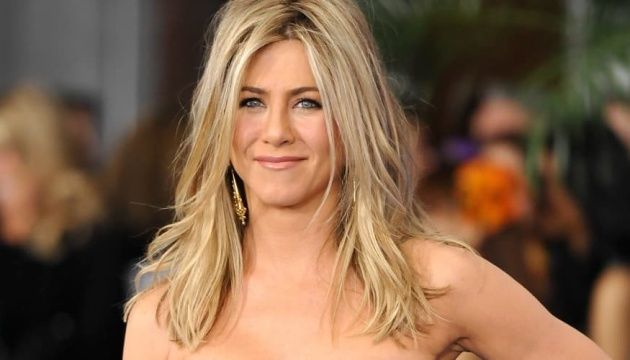

Дже́нніфер Лін Е́ністон-Американська акторка грецького походження, відома за роллю Рейчел Ґрін у культовому телесеріалі «Друзі» (1994—2004), за який отримала нагороду «Золотий глобус» (усього дві номінації за серіал) та премію «Еммі» (всього 6 номінацій за серіал). Також номінована на «Золотий глобус—2019» за серіал «Ранкове шоу» та на «Еммі—2006» — за серіал +«30 потрясінь». Знімалася й в успішних голлівудських фільмах: «Брюс Всемогутній», «А ось і Поллі», «Розлучення по-американськи» та інших.

Народилася 11 лютого 1969 в родині американського актора грецького походження Джона Еністона (англ. John Anthony Aniston, справжнє ім'я Янніс Анітіос Анастасакіс, грец. Γιάννης Ανήτιος Αναστασάκης МФА: [ˌænəstəˈsækɪs], нар. 24.07.1933) та акторки Ненсі Доу (англ. Nancy Maryanne Dow, 22.07.1936—25.05.2016). Прізвище батька акторки можна побачити на весільній табличці у фінальних кадрах сьомого сезону (в написанні з двома s — Anastassakis).[4] Виросла у Нью-Йорку в сім'ї з двома звідними братами: Джон Мелік (англ. John Melick, старший брат по матері) та Алекс Еністон (англ. Alex Aniston, молодший брат по батьку). Її батько народився на острові Крит. Її дід по матері, Ґордон МакЛін Доу, був шотландсько-анґлійського походження, а бабуся, Луїза Ґріеко — італійського. Хрещеним батьком Дженіфер став греко-американський актор і найкращий друг її батька — Теллі Савалас. Частину дитинства провела в Греції, але більшу його частину — в Нью-Йорку, де її батько знімався у мильній опері «Любов до життя». Уже коли батько знімався у мильній опері «Дні нашого життя» в ролі Віктора Кіріакіса, родина Еністон переїхала у 1985 році у Лос-Анджелес. Закінчила мангетенську Школу Фіорелло Ла Гардіа — середню школу музичного, образотворчого та театрального мистецтва (англ. Fiorello H. LaGuardia High School of Music & Art and Performing Arts). Проте бажання стати акторкою зросло, коли брала участь у бродвейських постановках «З усіх сил» та «Танцюючи на могилі шахової дошки». Одночасно підробляла на тимчасових роботах, таких як кур'єр та телемаркетер.
Еністон брала участь у радіошоу Говарда Стерна наприкінці 1980-х — на початку 1990-х. Вона переїхала в Голлівуд і в 1990 році отримала свою першу телевізійну роль у серіалі «Molloy», а також роль у телевізійному фільмі «Табір Кукамонга». Крім того, вона знімалася в серіалах «Ferris Bueller» (1990), «The Edge» (1992) і «Muddling Through» (1994), а також з'являлася як запрошена акторка в телесеріалах «Квантовий стрибок», «Голова Германа» і «Закон Берка». Після низки скасованих серіалів, а також своєї появи в підданому критиці фільмові жахів «Лепрекон», Еністон серйозно замислювалася про завершення кар'єри акторки. Зірка Дженніфер Еністон на «Голлівудській алеї слави» Однак плани Еністон змінилися, коли вона прийшла на кастинг серіалу «Друзі», який стартував на NBC в 1994 році. Продюсери шоу спочатку хотіли взяти на роль Рейчел Ґрін акторку Кортні Кокс, але Кортні сказала, що бачить себе в ролі Моніки Геллер. Після появи Дженніфер на знімальному майданчику, всім стало ясно, що вона ідеально підходить на роль Рейчел Ґрін. Цього персонажа вона грала протягом усього серіалу з 1994 по 2004 роки. Серіал став дуже успішним, і Еністон, поряд з іншими провідними акторами, здобула популярність серед телеглядачів. Її зачіску копіювали жінки всього світу. В останніх трьох сезонах «Друзів» Дженніфер одержувала зарплату в один мільйон доларів за серію. За участь у цьому шоу акторка була п'ять разів номінована на «Еммі» (і перемогла один раз) у номінації «Найкраща жіноча роль у комедійному серіалі». Еністон знімалася в декількох фільмах-виставах, включаючи культовий хіт «Офісний простір». Вона отримала дуже гарні відгуки критиків за свою роль у фільмі «Хороша дівчинка» (2002). Наприкінці 2005 року Еністон зіграла головні ролі у фільмах «Ціна зради» і «Ходять чутки», які мали непогані касові збори, принісши понад 30 мільйонів доларів кожен. Її кар'єра в кіно продовжилася і в 2006, коли Еністон затвердили на кілька великих ролей, включаючи романтичну комедію «Розлучення по-американськи». В кінці року вона з'явилася у фільмі «Дружина сенатора» в ролі Розалін, який вона також і продюсувала. Найуспішнішим фільмом Дженніфер є «Брюс всемогутній», що вийшов у 2003 році (касові збори 243 мільйони доларів у США), у якому вона грала подругу головного героя. Також досить успішний був фільм «А ось і Поллі» з її участю. У 2007 році доходи Еністон за підрахунками журналу Форбс склали $14 мільйонів. Найбільші гонорари вона отримала за фільми «Розлучення по-американськи» (2006, $8 000 000), «Ходять чутки» (2005, $8 000 000), «А ось і Поллі» (2004, $5 000 000), «Рок-зірка» (2001, $3 000 000) і «Портрет досконалості» (1997, $2 000 000). У 2016 році журнал People віддав перемогу Дженніфер Еністон у щорічній номінації «Найкрасивіша жінка світу».